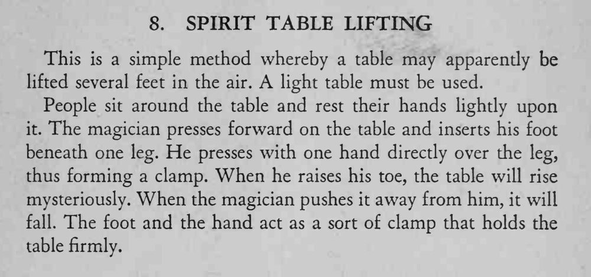

大家围坐桌旁、双手轻放在桌面上，桌子竟像被无形力量托起，离开地面好几英尺。
桌子越轻越好，手和脚要同步用力，抬升时身体不要后仰。

This is a simple method whereby a table may apparently be lifted several feet in the air. A light table must be used. People sit around the table and rest their hands lighdy upon it. The magician presses forward on the table and inserts his foot beneath one leg. He presses with one hand directly over the leg, thus forming a clamp. When he raises his toe, the table will rise mysteriously. When the magician pushes it away from him, it will fall. The foot and the hand act as a sort of clamp that holds the table firmly.